地政学
リロングウェはザンビア、モザンビーク、マラウイ湖へ向かう内陸回廊の首都です。南部偏重を和らげる行政拠点として置かれ、外交、援助、食料安全保障、地域交通が高原の官庁街へ集まります。農業国の均衡も映します。
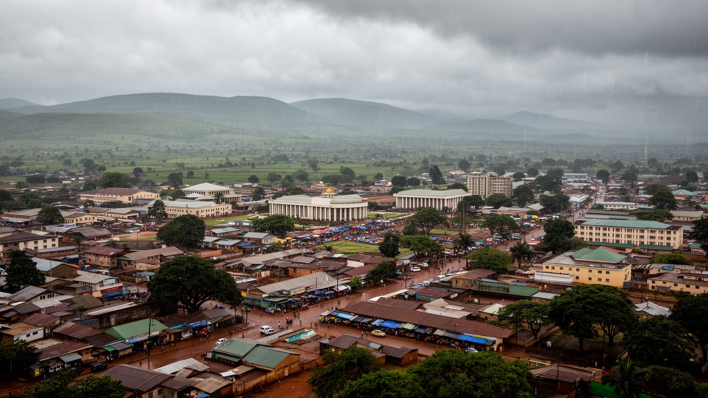
🇲🇼 マラウイ / 中部州 / World City Atlas
ザンビア、モザンビーク、マラウイ湖へ向かう内陸高原に置かれた首都です。官庁街、旧市街の市場、カネンゴ工業地帯、急成長する住宅地、教会とモスク、農産物流通が一つの都市圏で交差します。
都市の骨格
リロングウェは旧市街、市中心、キャピタルヒル、カネンゴ、ルンバジを軸に広がります。首都移転で作られた行政都市でありながら、市場と未計画居住地の力が都市の現実を形作ります。
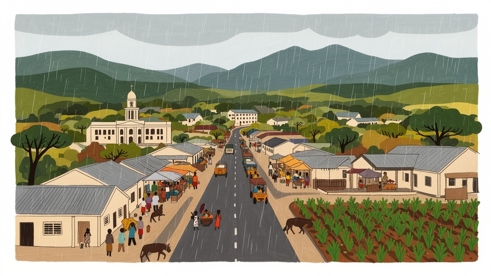
リロングウェはザンビア、モザンビーク、マラウイ湖へ向かう内陸回廊の首都です。南部偏重を和らげる行政拠点として置かれ、外交、援助、食料安全保障、地域交通が高原の官庁街へ集まります。農業国の均衡も映します。
雇用は行政、援助機関、農産物流通、カネンゴ工業、卸売、小売、建設、交通、家事労働に広がります。作物、燃料、輸入品の価格が家計を動かし、非公式労働が成長を支えます。屋台や修理の稼ぎも大きく技能も問われます。
チェワ系の文化、チチェワ語、英語教育、教会、モスク、音楽、市場の食が交わります。国内各地の人が集まり、親族関係、礼拝、ラマダン、学校行事、結婚式が都市の暦を作ります。ラジオの歌も通りに広く響きます。
旅行者は旧市街市場、野生動物センター、官庁街、工芸品店を巡り、湖や国立公園へ向かいます。住民は水、電気、家賃、通勤、洪水、物価、学校費に向き合います。距離の広い首都で、日常も旅も静かに重なります。
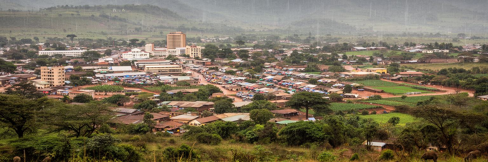
リロングウェは、海に面しないマラウイの中部高原に置かれた首都です。独立後の国家建設の中で、南部のゾンバやブランタイヤに偏っていた行政の重心を国土中央へ移し、北部と中部を結び直す役割を与えられました。標高のある気候は比較的過ごしやすく、雨季の緑と乾季の埃が都市の季節感を作ります。市街地は旧市街、市中心、キャピタルヒル、カネンゴ工業地帯、ルンバジ方面に分かれ、計画首都の秩序と市場都市の柔軟さが並びます。官庁や大使館が集まる広い道路の近くに、露店、ミニバス、非公式な商い、未舗装の住宅地が続くため、都市の姿は一枚の設計図だけでは説明できません。朝はミニバスの呼び声、焼きトウモロコシの匂い、制服姿の子どもが高原の空気を動かします。内陸首都であることは、港から遠いという制約も意味します。燃料、肥料、建材、輸入食品は長い物流を経て届き、外貨不足や道路事情が物価へ直結します。一方で、ザンビア、モザンビーク、マラウイ湖方面へ向かう回廊の結節点として、リロングウェは農業国の政治と流通をまとめる場所です。静かな高原の景観の背後には、国家の均衡、食料、援助、物流、若者の雇用をどう組み立てるかという重い課題があります。さらに計画地区と自然保護区が近接するため、成長を管理しなければ緑地、河川、生活道路が同時に圧迫されます。
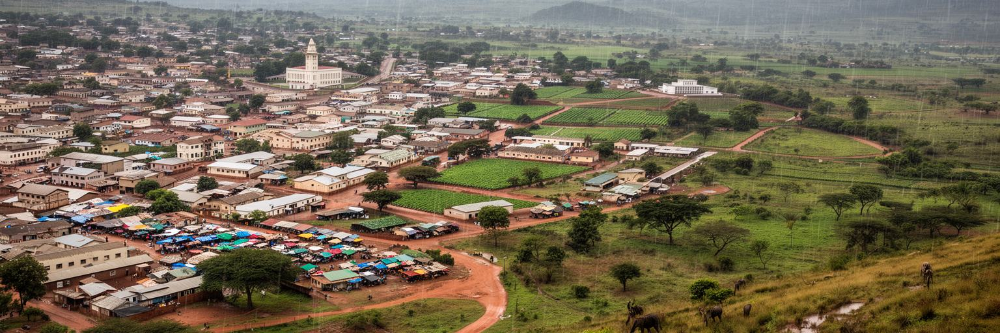
リロングウェが首都として本格的に整えられた背景には、行政効率だけでなく、国土の政治的な均衡を作る狙いがありました。ゾンバから首都機能が移り、キャピタルヒル周辺には省庁、国会、大統領府関連施設、大使館、国際機関、援助機関が集まりました。マラウイは農業依存、外貨不足、債務、気候災害、食料価格、保健や教育の課題を抱える国であり、リロングウェの官庁街では国内政策と国際支援が日々交渉されています。援助機関の車、政府職員、議員、研究者、NGO職員、地方から陳情に来る人々が同じ道路を使い、首都の政治空間を作ります。ただし、広い道路と官庁の整った景観は、必ずしも行政サービスの届きやすさを保証しません。窓口の透明性、地方自治体の財源、汚職対策、公共調達、災害対応が住民の信頼を左右します。首都に権限が集中しすぎれば、地方の声は遠くなります。逆に、リロングウェが中部高原の結節点として政策を開き、地方都市や農村の課題を丁寧に受け止めれば、首都移転の意味は現在にも生きます。政治の都市としてのリロングウェは、壮大な建物よりも、国家の限られた資源を公平に配分できるかで評価されます。市民が行政を身近に感じられるかが、首都の成熟を決めます。議会の議論、予算の執行、援助事業の成果が、学校や診療所や水道に届く時、首都の政治は生活の言葉になります。
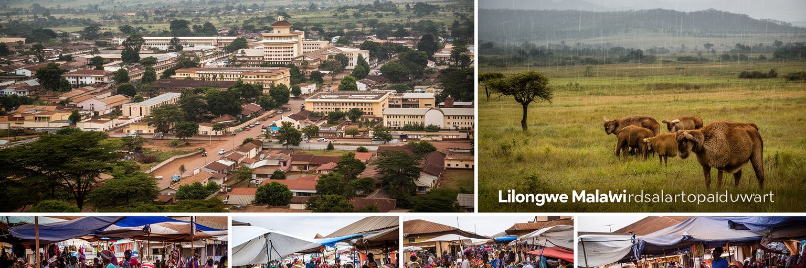
リロングウェの市場は、農業国マラウイの生活を最もよく映す場所です。トウモロコシ、豆、野菜、鶏、魚の干物、果物、古着、携帯品、調理道具、輸入食品が並び、農村の収穫、燃料価格、為替、雨量、道路事情が毎日の値段に現れます。ンシマ用の粉、マンディジ、焼き肉、茶の香りは、買い物を家計の計算だけでなく感覚の記憶にもします。国の重要な輸出品であるたばこは郊外の取引や倉庫を通じて外貨と農家収入に関わり、首都の商業や金融にも影響します。市場で働く人は、正式な店舗だけではありません。露店商、運搬人、ミニバスの客引き、屋台の調理人、仕入れの仲介者、修理職人、若い売り子が都市経済を支えます。物価が上がると、賃金の低い世帯ほど食事の量や学校費を調整せざるを得ません。市場の混雑、衛生、排水、火災、道路占用、警察や市当局との関係は、生活の安定に直結します。農村から都市へ食料が届き、都市から農村へ現金や商品が戻る循環は、リロングウェを国の食料システムの結節点にしています。市場を観光の色彩として眺めるだけでは、価格交渉、信用取引、親族ネットワーク、女性の労働、若者の不安定な稼ぎは見えません。朝の仕入れ、雨を避ける屋根、荷下ろしの場所、清潔な水の確保は、小さく見えても都市の栄養と雇用を守る重要な設備です。信頼できる秤や保存場所も必要です。
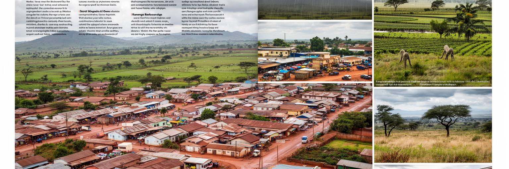
リロングウェ北部のカネンゴは、首都の実務的な経済を支える工業と物流の地区です。食品加工、たばこ関連、倉庫、卸売、建材、車両整備、燃料、輸送会社、軽工業が集まり、官庁街や旧市街とは違う都市の顔を見せます。マラウイの産業化は、港のない内陸国という制約、電力供給の不安定さ、輸入部品の価格、外貨不足、道路輸送費に左右されます。それでも、農産物を加工し、国内市場へ商品を流し、雇用を作る場所としてカネンゴの重要性は大きいです。工場や倉庫で働く人々は、正規雇用、日雇い、警備、清掃、運転、荷役、事務、修理など多様な働き方をしています。産業地区の発展には、道路、排水、電力、職業訓練、安全基準、公共交通、住宅地との距離が欠かせません。工場が増えても、通勤が高く、賃金が低く、労働安全が弱ければ、都市の豊かさは広がりません。カネンゴを見ると、リロングウェが単なる行政首都ではなく、農業国の加工と流通を担う現場であることが分かります。国家経済を多様化する議論は、政策文書だけでなく、倉庫の搬入口、電力の安定、技能を学ぶ若者の仕事に具体化します。ここで雇用の質が上がるかが、首都の成長を生活へ変える鍵になります。物流用地の不足や大型車の動線も課題で、産業地区と住宅地が無秩序に近づけば事故、騒音、排水の負担が増えます。
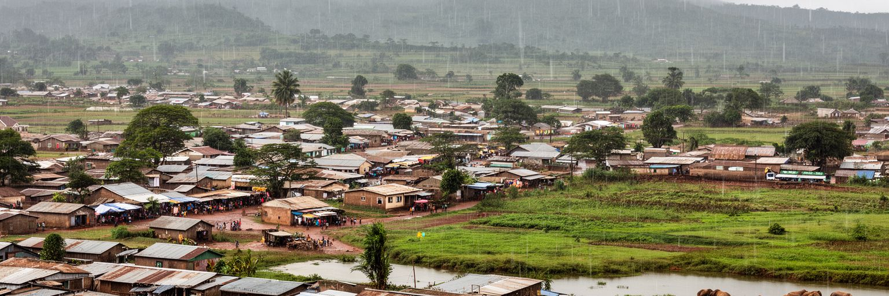
リロングウェは計画首都として設計されましたが、実際の成長は計画を大きく超えています。人口増加と地方からの移住によって、旧市街や市中心の周辺、南部や西部の外縁に住宅地が広がり、未計画居住地も増えました。住民は仕事、学校、市場、親族、教会やモスクへの近さを求めますが、低所得世帯にとって整備された地区の土地や家賃は重い負担です。結果として、道路、排水、水道、電気、トイレ、廃棄物収集が十分でない場所に住まざるを得ない家庭もあります。雨季には未舗装道路がぬかるみ、洪水や排水不良が通学、通勤、病院への移動を妨げます。住宅問題は家の数だけではなく、土地権利、公共交通、雇用、学校配置、災害リスク、女性や子どもの安全と結びついています。都市当局が違法居住として一方的に扱えば、住民の生活基盤は不安定になります。逆に、住民組織と協力して道路、水、排水、土地の手続きを整えれば、都市全体の健康と経済活動が改善します。リロングウェの住宅拡大は、首都の成長が誰にとって機会になり、誰にとって負担になるかを示しています。整った官庁街と外縁の未整備地区を同時に見てこそ、この都市の現実が分かります。住まいは景観ではなく、教育時間、感染症、通勤費、家族の安心を決める基盤です。土地情報が不透明なまま売買されると、後から立ち退きや紛争が起き、貧しい世帯ほど大きな損失を受けます。
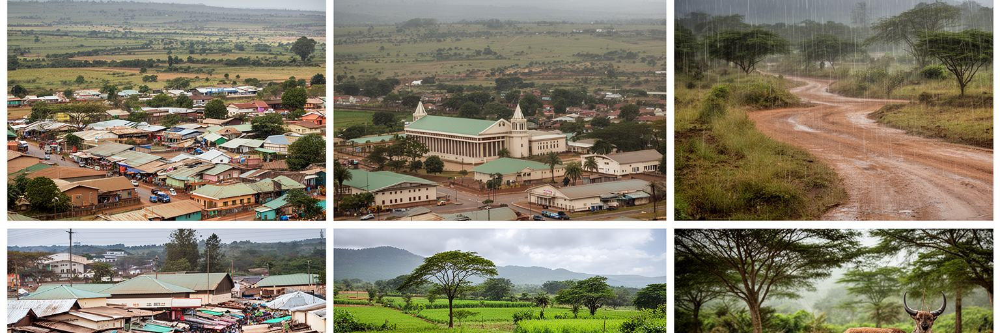
リロングウェの交通は、首都内の通勤と国土を結ぶ長距離回廊が重なっています。市内ではミニバス、タクシー、徒歩、自転車、バイク、私用車が中心で、旧市街、市中心、キャピタルヒル、住宅地、カネンゴ、空港方面を結びます。道路が広い地区もありますが、職場と住まいが離れ、公共交通が非公式に近い形で運営されるため、乗り換え、待ち時間、料金、混雑が家計と時間を圧迫します。長距離では、ザンビア、モザンビーク、ブランタイヤ、ムズズ、マラウイ湖方面へ向かう道路が重要です。港を持たない国にとって、燃料、肥料、医薬品、機械、食品、輸出作物は道路と国境手続きに依存します。外貨不足や燃料不足が起きると、交通はすぐ都市生活の不安になります。カムズ国際空港は外交、援助、出張、留学、医療移動の入口ですが、多くの住民にとって日常の移動はミニバス停と徒歩の組み合わせです。交通政策を道路拡幅だけで考えると、歩行者の安全、女性の夜間移動、障害者のアクセス、雨の日のバス停、運転手の労働条件を見落とします。リロングウェの回廊性は、国際物流と近所の移動を同時に改善して初めて力を持ちます。首都の距離を短く感じられるかどうかが、仕事、学校、病院への公平なアクセスを左右します。歩道や自転車の安全が弱いまま車だけが増えると、低所得者ほど危険な移動を強いられ、都市の機会から遠ざかります。
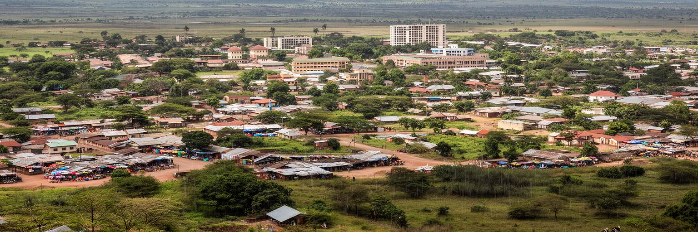
リロングウェの文化は、チェワ系を中心とする中部の社会、国内各地から移ってきた人々、英語教育、チチェワ語の日常、教会、モスク、市場の食、若者の音楽が混ざって作られます。キリスト教は礼拝、学校、葬儀、結婚、慈善活動、地域の助け合いに深く関わり、イスラム教徒の商人や移住者も市場と近隣生活を支えます。日曜日の礼拝、聖歌、青年会、ラマダン、結婚式、葬儀、親族の集まりは、都市の時間を整える大切な行事です。首都には農村との結びつきを保つ人が多く、収入の一部を故郷へ送り、冠婚葬祭や収穫期に移動します。都市生活は完全に農村から切り離されているわけではありません。学校や大学、ラジオ、教会、NGO、サッカー、携帯電話、SNSは、若者に新しい表現と政治意識を与えます。夜の集まりではゴスペルやポップスが流れ、代表戦の日は小さな店の画面に人が集まります。一方で、階層、出身地、言語、宗教、ジェンダーによる機会差も残ります。文化を観光的な踊りや工芸だけで見ると、信仰組織が生活相談、学費支援、病気の看病、失業時の助け合いを担う現実を見落とします。リロングウェの都市文化は、家族、祈り、市場、学校、近所のつながりによって厚みを持っています。音楽会やサッカー、結婚式の集まりは、若者が自分の声を出し、地域の人間関係を結び直す場にもなります。
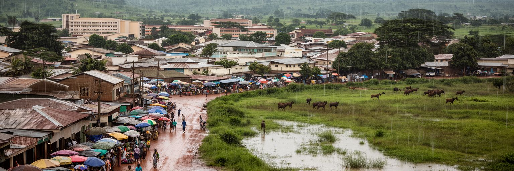
リロングウェの生活は、雨季と乾季の差に強く左右されます。雨季には短時間の強い雨が道路、排水路、低地の住宅地、市場、通学路を傷め、乾季には水供給、井戸、庭、都市の緑、食料価格が緊張します。リロングウェ川や周辺の水系は都市名の由来でもありますが、急速な市街地拡大、森林減少、土砂流出、廃棄物、排水不良が水環境を弱めています。水道が安定しない地区では、女性や子どもが水くみに時間を使い、衛生や学習にも影響します。気候変動は豪雨、干ばつ、農作物の不作、食料価格の上昇を通じて、都市の貧困層へ重くのしかかります。水と気候の問題は、農村だけの話ではありません。首都の市場で売られるトウモロコシや野菜の価格、学校給食、家庭の食事、工場の操業、病院の衛生にもつながります。都市計画では、排水路の維持、河川沿いの保全、廃棄物管理、雨水の流れを考えた住宅整備が欠かせません。道路や建物を増やすだけでは、雨水は行き場を失います。リロングウェの強さは、高原の穏やかな気候に甘えるのではなく、雨と乾きの両方に耐える公共サービスを作れるかで決まります。水の安定は、住民の健康、時間、家計、都市への信頼を支える最も基本的な条件です。学校や診療所で水が使えるか、家庭で手洗いができるかは、都市の発展を測る目立たない指標です。修理体制も重要です。
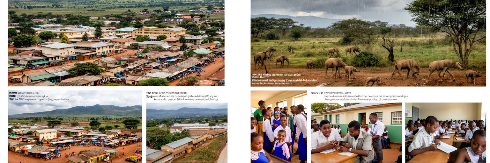
リロングウェは若い人口を抱える首都であり、教育と雇用の期待が強く集まる都市です。地方から来た若者は、学校、大学、職業訓練、NGO、政府機関、商店、警備、運転、家事労働、建設、携帯電話関連の仕事を探します。英語とチチェワ語を使い分け、スマートフォンで情報を得る世代は、農村の親族とつながりながら都市の機会を追います。しかし、学費、制服、交通費、家賃、食費は重く、卒業しても安定した仕事に入れるとは限りません。公務員や援助機関の仕事は魅力的ですが、枠は限られ、非公式販売や短期労働に頼る若者も多いです。女性の若者は、教育継続、早婚、妊娠、家事負担、夜間移動の安全という複数の制約に直面します。都市が若者に希望を与えるには、学校の質、職業訓練、起業支援、安い交通、図書館やスポーツ施設、安全な公共空間が必要です。放課後のサッカー、教会の青年会、SNSでの小商い、ラジオの討論は、政治や進路を考える身近な入口にもなります。けれども、制度がその力を支えられなければ、不満や移住願望も強まります。首都の未来は、高い建物よりも、若い住民が技能を身につけ、家族を支え、公共生活に参加できるかにかかっています。教育は個人の成功だけでなく、農業国が都市経済を広げるための基盤です。実習先、奨学金、安い通信環境が増えれば、若者の学びは市場や工場や行政の改善へつながります。
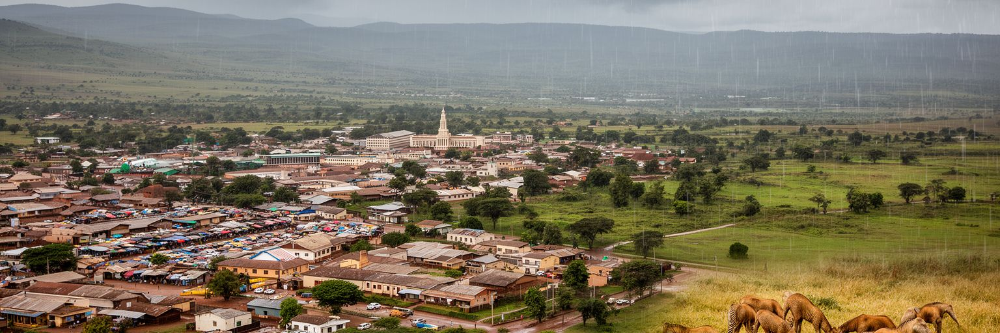
リロングウェの観光は、派手な大都市観光ではなく、マラウイの自然と人々の暮らしへ入る穏やかな入口として成り立ちます。旧市街市場、工芸品店、カフェ、リロングウェ野生動物センター、官庁街、教会、モスク、住宅地の風景を見ながら、旅行者はマラウイ湖、リウォンデ国立公園、ニイカ高原、ザンビア国境方面へ向かいます。首都に滞在する時間は短くなりがちですが、市場の価格、ミニバスの動き、緑地の保全、援助機関の多さ、農村から来た人々の話を聞けば、国の構造が見えてきます。観光の課題は、案内表示、歩道、治安、公共交通、ゴミ、価格の透明性、地域ガイドへの利益配分です。野生動物センターのような場所は、保護、教育、都市の緑、子どもの学習を結び、単なる見世物ではない自然との関係を示します。旅行者が首都を通過点としてだけ扱うと、マラウイの政治、食料、都市化の現実を見逃します。リロングウェらしい旅は、湖やサファリへ急ぐ前に、内陸首都の静かな道路、市場、祈り、若者の仕事、雨季の水を読む時間を持つことです。観光が小商人、工芸職人、ガイド、飲食店、保全活動に届けば、首都は自然の入口であるだけでなく、地域経済を支える場になります。誠実な案内と安全な歩行環境が、旅の質を高めます。短い滞在でも、地元の食堂や市場を尊重して使えば、旅行者の支出は都市の小さな仕事へ届きます。
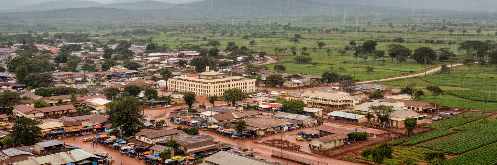
リロングウェは、巨大なスカイラインや港湾都市の迫力で世界都市性を語る場所ではありません。それでも、現代の都市を考える重要な論点が密集しています。首都移転による国家の均衡、農業依存の経済、たばこや食料の流通、援助と政府財政、未計画居住地、若者の雇用、内陸物流、水と気候リスク、信仰と親族の助け合いが、高原の広い道路と市場の混雑の中で同時に動いています。統計上の所得は低く、外貨不足や物価上昇は生活を厳しくしますが、都市には学び、商い、政治参加、移動の希望も集まります。リロングウェを読む時には、キャピタルヒルの官庁、旧市街の市場、カネンゴの倉庫、外縁の住宅地、ミニバス停、野生動物センター、雨季の排水路を別々に見てはいけません。そこには、マラウイという国が限られた資源をどう分け、農村と都市をどうつなぎ、若い人口にどんな未来を示すかが表れています。都市の重要性は規模だけでは測れません。リロングウェは、静かな内陸首都でありながら、食料安全保障、気候、援助、都市貧困、公共サービスという世界的な課題を日常の距離で見せます。高原の風景の奥にある生活の細部を見れば、この首都が担う責任の大きさが分かります。小さな改善も、家計と国家への信頼に直結します。舗装、排水、市場の衛生、学校への通いやすさを丁寧に積み上げることが、派手ではなくても首都の未来を作ります。